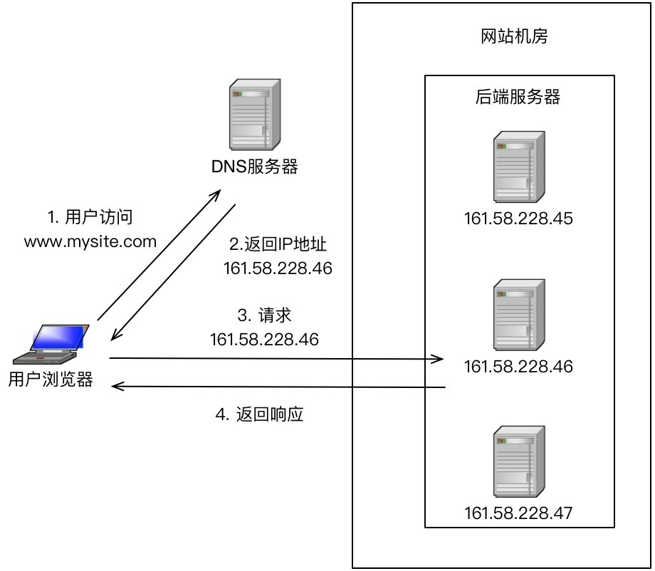
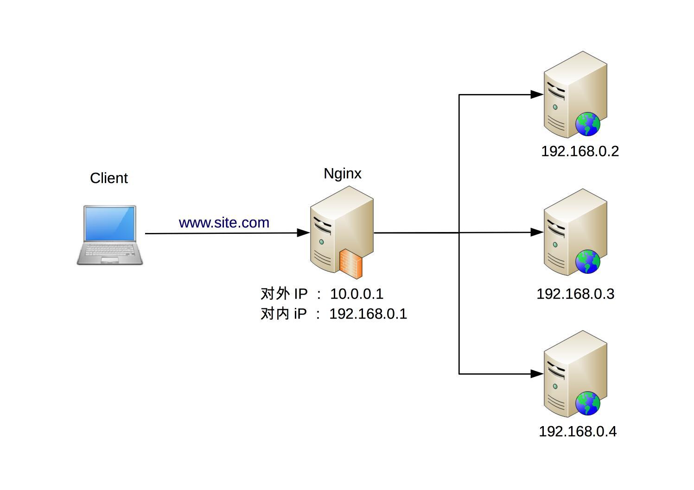
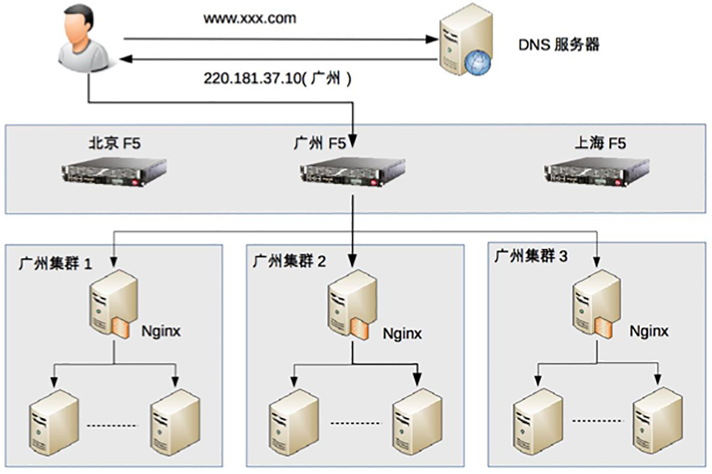

- 00 开篇词 照着做，你也能成为架构师！.md
- 01 架构到底是指什么？.md
- 02 架构设计的历史背景.md
- 03 架构设计的目的.md
- 04 复杂度来源：高性能.md
- 05 复杂度来源：高可用.md
- 06 复杂度来源：可扩展性.md
- 07 复杂度来源：低成本、安全、规模.md
- 08 架构设计三原则.md
- 09 架构设计原则案例.md
- 10 架构设计流程：识别复杂度.md
- 11 架构设计流程：设计备选方案.md
- 12 架构设计流程：评估和选择备选方案.md
- 13 架构设计流程：详细方案设计.md
- 14 高性能数据库集群：读写分离.md
- 15 高性能数据库集群：分库分表.md
- 16 高性能NoSQL.md
- 17 高性能缓存架构.md
- 18 单服务器高性能模式：PPC与TPC.md
- 19 单服务器高性能模式：Reactor与Proactor.md
- 20 高性能负载均衡：分类及架构.md
- 21 高性能负载均衡：算法.md
- 22 想成为架构师，你必须知道CAP理论.md
- 23 想成为架构师，你必须掌握的CAP细节.md
- 24 FMEA方法，排除架构可用性隐患的利器.md
- 25 高可用存储架构：双机架构.md
- 26 高可用存储架构：集群和分区.md
- 27 如何设计计算高可用架构？.md
- 28 业务高可用的保障：异地多活架构.md
- 29 异地多活设计4大技巧.md
- 30 异地多活设计4步走.md
- 31 如何应对接口级的故障？.md
- 32 可扩展架构的基本思想和模式.md
- 33 传统的可扩展架构模式：分层架构和SOA.md
- 34 深入理解微服务架构：银弹 or 焦油坑？.md
- 35 微服务架构最佳实践 - 方法篇.md
- 36 微服务架构最佳实践 - 基础设施篇.md
- 37 微内核架构详解.md
- 38 架构师应该如何判断技术演进的方向？.md
- 39 互联网技术演进的模式.md
- 40 互联网架构模板：存储层技术.md
- 41 互联网架构模板：开发层和服务层技术.md
- 42 互联网架构模板：网络层技术.md
- 43 互联网架构模板：用户层和业务层技术.md
- 44 互联网架构模板：平台技术.md
- 45 架构重构内功心法第一式：有的放矢.md
- 46 架构重构内功心法第二式：合纵连横.md
- 47 架构重构内功心法第三式：运筹帷幄.md
- 48 再谈开源项目：如何选择、使用以及二次开发？.md
- 49 谈谈App架构的演进.md
- 50 架构实战：架构设计文档模板.md
- 51 如何画出优秀的软件系统架构图？.md
- 加餐｜业务架构实战营开营了.md
- 加餐｜单服务器高性能模式性能对比.md
- 加餐｜扒一扒中台皇帝的外衣.md
- 如何高效地学习开源项目 华仔，放学别走！ 第3期.md
- 新书首发 《从零开始学架构》.md
- 架构专栏特别放送 华仔，放学别走！ 第2期.md
- 架构专栏特别放送 华仔，放学别走！第1期.md
- 架构师必读书单 华仔，放学别走！ 第5期.md
- 架构师成长之路 华仔，放学别走！ 第4期.md
- 结束语 坚持，成就你的技术梦想.md
20 高性能负载均衡：分类及架构
单服务器无论如何优化，无论采用多好的硬件，总会有一个性能天花板，当单服务器的性能无法满足业务需求时，就需要设计高性能集群来提升系统整体的处理性能。
高性能集群的本质很简单，通过增加更多的服务器来提升系统整体的计算能力。由于计算本身存在一个特点：同样的输入数据和逻辑，无论在哪台服务器上执行，都应该得到相同的输出。因此高性能集群设计的复杂度主要体现在任务分配这部分，需要设计合理的任务分配策略，将计算任务分配到多台服务器上执行。
高性能集群的复杂性主要体现在需要增加一个任务分配器，以及为任务选择一个合适的任务分配算法。对于任务分配器，现在更流行的通用叫法是“负载均衡器”。但这个名称有一定的误导性，会让人潜意识里认为任务分配的目的是要保持各个计算单元的负载达到均衡状态。而实际上任务分配并不只是考虑计算单元的负载均衡，不同的任务分配算法目标是不一样的，有的基于负载考虑，有的基于性能（吞吐量、响应时间）考虑，有的基于业务考虑。考虑到“负载均衡”已经成为了事实上的标准术语，这里我也用“负载均衡”来代替“任务分配”，但请你时刻记住，负载均衡不只是为了计算单元的负载达到均衡状态。
今天我先来讲讲负载均衡的分类及架构，下一期会讲负载均衡的算法。
负载均衡分类
常见的负载均衡系统包括3种：DNS负载均衡、硬件负载均衡和软件负载均衡。
DNS负载均衡
DNS是最简单也是最常见的负载均衡方式，一般用来实现地理级别的均衡。例如，北方的用户访问北京的机房，南方的用户访问深圳的机房。DNS负载均衡的本质是DNS解析同一个域名可以返回不同的IP地址。例如，同样是www.baidu.com，北方用户解析后获取的地址是61.135.165.224（这是北京机房的IP），南方用户解析后获取的地址是14.215.177.38（这是深圳机房的IP）。
下面是DNS负载均衡的简单示意图：

DNS负载均衡实现简单、成本低，但也存在粒度太粗、负载均衡算法少等缺点。仔细分析一下优缺点，其优点有：
- 简单、成本低：负载均衡工作交给DNS服务器处理，无须自己开发或者维护负载均衡设备。
- 就近访问，提升访问速度：DNS解析时可以根据请求来源IP，解析成距离用户最近的服务器地址，可以加快访问速度，改善性能。
缺点有：
- 更新不及时：DNS缓存的时间比较长，修改DNS配置后，由于缓存的原因，还是有很多用户会继续访问修改前的IP，这样的访问会失败，达不到负载均衡的目的，并且也影响用户正常使用业务。
- 扩展性差：DNS负载均衡的控制权在域名商那里，无法根据业务特点针对其做更多的定制化功能和扩展特性。
- 分配策略比较简单：DNS负载均衡支持的算法少；不能区分服务器的差异（不能根据系统与服务的状态来判断负载）；也无法感知后端服务器的状态。
针对DNS负载均衡的一些缺点，对于时延和故障敏感的业务，有一些公司自己实现了HTTP-DNS的功能，即使用HTTP协议实现一个私有的DNS系统。这样的方案和通用的DNS优缺点正好相反。
硬件负载均衡
硬件负载均衡是通过单独的硬件设备来实现负载均衡功能，这类设备和路由器、交换机类似，可以理解为一个用于负载均衡的基础网络设备。目前业界典型的硬件负载均衡设备有两款：F5和A10。这类设备性能强劲、功能强大，但价格都不便宜，一般只有“土豪”公司才会考虑使用此类设备。普通业务量级的公司一是负担不起，二是业务量没那么大，用这些设备也是浪费。
硬件负载均衡的优点是：
- 功能强大：全面支持各层级的负载均衡，支持全面的负载均衡算法，支持全局负载均衡。
- 性能强大：对比一下，软件负载均衡支持到10万级并发已经很厉害了，硬件负载均衡可以支持100万以上的并发。
- 稳定性高：商用硬件负载均衡，经过了良好的严格测试，经过大规模使用，稳定性高。
- 支持安全防护：硬件均衡设备除具备负载均衡功能外，还具备防火墙、防DDoS攻击等安全功能。
硬件负载均衡的缺点是：
- 价格昂贵：最普通的一台F5就是一台“马6”，好一点的就是“Q7”了。
- 扩展能力差：硬件设备，可以根据业务进行配置，但无法进行扩展和定制。
软件负载均衡
软件负载均衡通过负载均衡软件来实现负载均衡功能，常见的有Nginx和LVS，其中Nginx是软件的7层负载均衡，LVS是Linux内核的4层负载均衡。4层和7层的区别就在于协议和灵活性，Nginx支持HTTP、E-mail协议；而LVS是4层负载均衡，和协议无关，几乎所有应用都可以做，例如，聊天、数据库等。
软件和硬件的最主要区别就在于性能，硬件负载均衡性能远远高于软件负载均衡性能。Nginx的性能是万级，一般的Linux服务器上装一个Nginx大概能到5万/秒；LVS的性能是十万级，据说可达到80万/秒；而F5性能是百万级，从200万/秒到800万/秒都有（数据来源网络，仅供参考，如需采用请根据实际业务场景进行性能测试）。当然，软件负载均衡的最大优势是便宜，一台普通的Linux服务器批发价大概就是1万元左右，相比F5的价格，那就是自行车和宝马的区别了。
除了使用开源的系统进行负载均衡，如果业务比较特殊，也可能基于开源系统进行定制（例如，Nginx插件），甚至进行自研。
下面是Nginx的负载均衡架构示意图：

软件负载均衡的优点：
- 简单：无论是部署还是维护都比较简单。
- 便宜：只要买个Linux服务器，装上软件即可。
- 灵活：4层和7层负载均衡可以根据业务进行选择；也可以根据业务进行比较方便的扩展，例如，可以通过Nginx的插件来实现业务的定制化功能。
其实下面的缺点都是和硬件负载均衡相比的，并不是说软件负载均衡没法用。
- 性能一般：一个Nginx大约能支撑5万并发。
- 功能没有硬件负载均衡那么强大。
- 一般不具备防火墙和防DDoS攻击等安全功能。
负载均衡典型架构
前面我们介绍了3种常见的负载均衡机制：DNS负载均衡、硬件负载均衡、软件负载均衡，每种方式都有一些优缺点，但并不意味着在实际应用中只能基于它们的优缺点进行非此即彼的选择，反而是基于它们的优缺点进行组合使用。具体来说，组合的基本原则为：DNS负载均衡用于实现地理级别的负载均衡；硬件负载均衡用于实现集群级别的负载均衡；软件负载均衡用于实现机器级别的负载均衡。
我以一个假想的实例来说明一下这种组合方式，如下图所示。

整个系统的负载均衡分为三层。
- 地理级别负载均衡：www.xxx.com部署在北京、广州、上海三个机房，当用户访问时，DNS会根据用户的地理位置来决定返回哪个机房的IP，图中返回了广州机房的IP地址，这样用户就访问到广州机房了。
- 集群级别负载均衡：广州机房的负载均衡用的是F5设备，F5收到用户请求后，进行集群级别的负载均衡，将用户请求发给3个本地集群中的一个，我们假设F5将用户请求发给了“广州集群2”。
- 机器级别的负载均衡：广州集群2的负载均衡用的是Nginx，Nginx收到用户请求后，将用户请求发送给集群里面的某台服务器，服务器处理用户的业务请求并返回业务响应。
需要注意的是，上图只是一个示例，一般在大型业务场景下才会这样用，如果业务量没这么大，则没有必要严格照搬这套架构。例如，一个大学的论坛，完全可以不需要DNS负载均衡，也不需要F5设备，只需要用Nginx作为一个简单的负载均衡就足够了。
小结
今天我为你讲了负载均衡的常见分类以及典型架构，希望对你有所帮助。
这就是今天的全部内容，留一道思考题给你吧，假设你来设计一个日活跃用户1000万的论坛的负载均衡集群，你的方案是什么？设计理由是什么？
© 2019 - 2023 Liangliang Lee. Powered by Vert.x and hexo-theme-book.